Nexuiz Basics explained
This file attempts to cover all of the fundamental principles and techniques for playing Nexuiz in particular, though it will largely apply to any first person shooter.
Getting Comfortable
The most important thing when playing is 'to feel good'. You need to be comfortable with how the game feels, and how it works, in order to play well. This means being able to concentrate on the game play itself, without being disturbed by in-game distractions or by various sorts of handicaps. This guide provides a systematic but very brief introduction to Nexuiz, with a view to increasing your effectiveness in-game, straight off the mark.
Reducing Clutter
Especially when playing against others the first thing you need to ensure is that you can hear and see well. Although music can enhance the feeling of a game by complementing the action, it can also obscure the sounds of other events - such as players shooting at you or picking up items nearby. For this reason, many people turn off music while playing (set music in the settings/misc menu to off). You can also improve your ability to hear in-game events by simply using headphones instead of speakers. Headphones muffle external noises around you, and also make it easier to hear faint noises in the game. Because of this, you can hear others more easily, and thus react better.
Similarly, eye-candy can make the game very appealing to look at, but can also act to obscure in-game events - the flares and smoke caused by rockets, for example, can make spotting your target much more difficult in the heat of battle. Eye-candy also incurs performance hits on slower machines, which can make playing difficult. Bloom might be nice to look at, but it is often just distracting when playing. So again, many players disable some of the visual effects, so as to make the game easier to play in this regard (things to turn off include Bloom, HDR, Gloss, Coronas and all the Realtime stuff in the settings/effects menu). Although it may seem as if removing visual (and audio) effects will make the game less immersive by reducing the mood which the game designers were aiming for, in the long run it will make it much more rewarding and fun to play. Darkness and shadows can create creepiness and realism, but you simply don't notice these things in a fast-paced multi player battle. On the contrary, they make it harder to spot opponents or items and end up being frustrating. Better to play the game in campaign mode with full visual effects to see how pretty it can be, and then, once you're over the initial craving for eye-candy, start tuning the game to be more functional in multi player.
In this regard, one of the first things to adjust is the brightness and contrast (in the settings/video menu), so that shadows are not too impenetrable, and areas of alternating light and dark don't create difficulties in tracking opponents. It's also worthwhile to try increasing you field of view (fov) - the amount you can see to the left and right. By default, Nexuiz uses a fov of 90 degrees. Increasing this improves your peripheral vision, but also makes everything seem smaller and thus reduces your ability to aim. Decreasing it has the opposite effect. Most gamers find a nice balance somewhere around fov 100-120. You can find the fov control in the multiplayer/player setup menu.
Controlling Your Character
Another thing which will greatly improve the game experience is to have comfortable movement controls, and to be able to get to the 'right gun' quickly. In terms of movement, there's no need to stick to the game defaults for controlling your character. Some people like to jump with space; some with mouse2. Some like inverted mouse, and some can't use it. Some use WASD for forward, left, back, right; some use ESDF or even 8456. Use whatever you feel good with.
In terms of weapon controls, try to get out of the habit of using the mouse's scroll-wheel to select which weapon to use. This is a very slow and unreliable way of changing weapons, and in a fast-paced deathmatch your ability to correctly and immediately pick the most appropriate gun for the job is critical. For example, if you hit someone pretty hard with the rocket launcher, and he has taken a lot of damage, you should switch to the shotgun or machine gun to finish him off, rather than worrying about whether you'll be able to hit him again with the slower and more inaccurate rockets. Using the mouse wheel to switch may well take too long, and you also have to keep an eye on the weapons as they scroll by (unless your mouse has very good scroll feedback, and you've memorized the order of weapons, and you know which weapons you currently have, and you can figure out on the fly how many scrolls you need to get to the shotgun!). On the other hand, if you have configured, say, the G key to switch to the shotgun, you can easily switch quickly and reliably, and finish him off in an instant. For this reason, it's extremely helpful to configure weapon-selection keys around the ones you use for moving. It's also obviously handy to use a similar layout in all the games you play. For example, you can have G as the key for 'all shotgun like weapons' in each game. All 'rocket like' weapons can go on R, and all 'sniper guns' on T, and so on - or whatever suits you! This way you do not need to think about which key you need for which gun - just what you want to do. You can change those key bindings in the settings/input menu.
Finally, adjust your mouse sensitivity. Sensitivity controls how much (or fast) your view turns when moving the mouse. You can make it high sensitivity, which means you need to move the mouse only a short distance to turn fast or far; or you can make it low sensitivity, so that you turn slowly and have to move the mouse further. A high sensitivity reduces the need to lift and reposition the mouse, and it will help you when doing lots of turns. A low sensitivity will help you to aim more easily, and also make your aim more steady if you are nervous and have slightly shaky hands. For the most part, the level of sensitivity you choose depends on how you aim. This is a very personal thing and you will have to see what you like - again, select the setting which is most comfortable for you. However, a good rule of thumb when you're learning to play is to configure your sensitivity a little lower than you're comfortable with, and try to get used to it. After a few hours you will probably find that you have acclimatized, and are aiming better than before. Keep reducing the sensitivity below your comfort zone until you are happy with your aim, or until it definitely becomes too low for you. You'd be surprised the difference this makes. Also consider that you can either use your wrist or your arm to aim - and you'll probably do one or the other more naturally. Using the wrist is more exact, and thus high sensitivity is found more often among wrist aimers; using the arm involves more mouse movements, and so low sensitivity is common to arm aimers. As a rule of thumb your sensitivity should be set so that you can comfortably perform a 180 degree turn with one sweep of your mouse. The sensitivity setting can be found in the settings/input menu.
Playing
Identifying Your Opponent
Depending on the game mode played you either fight for yourself against all others (sometimes there is just one other player to play against) or its your team vs the other team(s). Pay attention to the welcoming screen it will tell you what gamemode is being played. You can find an explanation of those at the end of this guide. If its a team match you might have to choose a team or you could be automatically assigned to a team when you join the match. If you have to choose yourself its best to just use the Auto button! It will assign you to the smallest team or if the teams have the same size to the one that has less points. Only use the specific team buttons if you REALLY want to join that team. You can press F5 to bring up the team selection dialog or instead of pressing F5 and clicking on the Auto button you can also press F6, thats a shortcut for the Auto button. If you are unsure about which team you are in look at your gun or at the scoreboard, which by default will be shown when you press TAB. The weapon color and the color beside your name is your team color. Try to only hit the OTHER team(s) :).
Hitting Your Opponent
Once you're comfortable with your controls and your mouse, you should already find it easier to hit your opponents. And, if you've bound keys to each of the weapons, you can accurately pick which one to use. But to know which weapon to select, and to get the most out of it, you must understand the advantages and the use of each.
When you use direct-hit (hitscan) weapons like the shotgun, machinegun, campingrifle and the nex, you 'just' have to directly aim with the crosshair and hit fire. Obviously this can be much harder than it sounds, particularly when both you and your opponent are moving. Therefore, you should use geometry to your advantage, to reduce the relative movement between you as much as possible, so that you have as much time as possible to aim. When someone is moving from one side of your view to the other it is harder to aim at him than when is moving towards or away from you. In the latter case he will hardly change his position relative to yours, and this gives you more time to aim at him. In the former, his position is changing a lot, and so you have to react to how he moves very quickly and accurately to ensure a good shot. The same principle applies when your opponent uses a jump pad. He will prescribe a trajectory in the air, and at its highest point he will stop for a moment. It is easier to aim at him at this point than when he is accelerating off the jump-pad.
In addition to using geometry to your advantage, when you're moving relative to your opponent it is sometimes easier to not aim with the mouse, but rather to leave it steady at the right height, and use the strafe buttons to move yourself and thus your cross hair onto him. If you have the advantage of his not seeing you, or being unable to shoot at you, or even if you simply have a health and armor advantage over him, you can even just aim at some point and wait for him to walk into your cross hair. However, always bear in mind that people will generally move unpredictably so as to lessen their chances of being hit - so unless you're sure of where he's going, don't sacrifice your own movement advantage for a hit that might never come.
Using projectile weapons such as the mortar, electro, hagar or rocket launcher can be both easier and harder than using hitscan weapons. You must still consider the same geometric factors, but you also have to keep in mind that your projectile will take some time to travel the distance between you and your opponent. In that time they will continue moving! So it's absolutely no use to aim directly at them. It will take some experience with each weapon, and with getting used to how people move, but you should eventually develop a good instinct for where your opponent will be at the time when your projectile will land (and where the projectile itself will land), and thus be able to 'lead' him when you aim. If your target moves to the right, aim further to the right and press fire. Just note how off your hit was and try to adjust next time. It takes a few matches to get the hang of this. Also consider that almost all projectiles will explode when they hit something hard, and those explosions will also cause damage to players nearby (splash damage). Now thats the part that makes projectile weapons easier to use. You can use splash damage to your advantage, so that rather than trying to predict the exact spot at which to aim your projectile (which is very difficult), you can aim at the general area of floor or wall where you expect your opponent to be and let the splash damage do its work. Along these lines, you'll find that it's much easier to aim at his feet and use the splash damage from the explosion on the floor than it is to hit him directly.
Also bear in mind that people try to evade projectiles; and it is even comparatively easy to do this at distance. If you fire to their left they will see it coming, and change direction to the right. You can use this to your advantage by boxing them in with explosions - just fire another one to their right. If you correctly place both projectiles, they will be unable to evade the splash damage from one of them. Either they will avoid the first and be hit by the second, or they will backtrack to avoid the second and be hit by the first. Or, even better, they'll not see the first one at all and be hit directly.
Controlling The Map
To put up a good fight you need to survive an attack, so make sure you pick up health and armor lying around the map. This will also ensure that your opponents are deprived of these, so it will be easier for you to frag them. To do this effectively you will have to learn where those items are, and try to get them before someone else does. Armor and health items reappear 30 seconds after they were taken. You can use this to your advantage by timing your pickups - look at the scoreboard to see the current map time, and then use this to predict when items will respawn. This way, you can develop patterns on the map so that you're always around when an item respawns. However, be careful - patterns make you predictable, and your opponent can also use the timer! If you keep grabbing the armor or health, he will use this against you by lying an ambush.
The health and armor system in Nexuiz is different to other games in that it tends toward an equilibrium of 100 health and 100 armor. You can collect as much health and armor as you like, but it will degenerate toward these values. The more health and armor you have, the faster it will degenerate - but when you pick them up the degeneration stops momentarily. Because of this, you can't just load up on health and armor and head off into battle - you need to constantly replenish to remain strong. On the converse, though, when your health is below 100 it will slowly regenerate (armor will not). The lower it is, the faster it will replenish. This regeneration stops for a few seconds if you are hurt, so just running away after a fight helps staying alive but is usually not enough to restore you to useful battle ready levels again - you have to wait a while to regain your full health, and so picking up health after a fight is still important.
In regard to the previous point of working a map to control items, and also shooting at where your opponent will be, it's important to try to predict where on the map your opponents are even when you can't directly see them. First, try to listen for them; secondly, learn the maps so you know the most useful routes and the most popular areas to which people tend to gravitate. It gives you a marked advantage to be able to say, "I saw or heard someone pick up an armor, so they must be at such-and-such location, and from there he can only go to this place or that place." Just shooting something to the likely places your opponent will be - a rocket or a grenade for example - can often result in either a surprise kill, or in surprise damage which you can then follow up. Don't underestimate how likely a well-aimed educated guess is to hit someone. Maybe he'll walk into it - rockets can be hard to see coming, and grenades lying on the floor or spammed into a small space can be really hard to avoid. Once you've hurt him you'll hear the tink of your damage, and you will also know for sure were he is and can finish him off. You can pretty much 'lock down' a map by picking up items, and making sure others have a hard time getting around which will also mess with their concentration.
Using Weapons Effectively
Among the items you can pick up are the weapons. Some of them are very unique to Nexuiz, and to get the most out of them you need to be familiar with every aspect of how they work - including the rate of fire, the damage per hit, the spread and speed of the payload, and so on.
Almost all weapons in Nexuiz have two firing modes, so make sure you know both. You normally (depending on game-mode) start equipped with two weapons: the Laser and the shotgun. You can bind these weapons to a key at the settings/input menu or in the console using the command bind key "impulse n", where n is the number of the weapon.
| 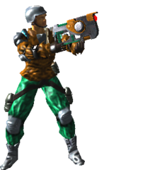 | The Laser is not often used as a weapon, as it does not do much damage - but it's a useful tool to move around the map, because it has a significant push. The 'explosion' from its projectile will push you and other players around a lot. The trick to using it to move around is to use this push to gain speed or to do huge jumps. For an easy start, take the Laser, look down at the floor, and press fire. It will push you high into the air. If you press jump and fire at the same time, you will get even higher - but it depends on the timing, and, for more advanced jumps, also on the angle you fire at the floor, as well as how fast and in which direction you move. For example if you just run forwards, look down and press fire it will catapult you forward with great speed. Play around with it, and watch others, and you will learn a very useful skill in Nexuiz. The secondary fire mode of the Laser switches back to the last used weapon. The Laser does not use up any ammo. | 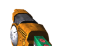 |
| 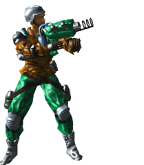 | The Grappling Hook is an other movement tool. The primary mode attaches itself to all sorts of solid objects and will pull you there to move through the map like spider man. You can get very fast that way or reach spots you would not get to by other means. The secondary firemode drops a small gravity bomb that will affect enemy players and also releases a lot of smoke which will make you harder to see and hit. The gravity bomb uses cell ammo. There is also a mutator that adds a off-hand hook which can be used all the time, uses no ammo but only does the pulling part. | 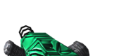 |
| 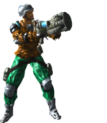 | The Port-O-Launch is the perfection of movement. The grenade it launches creates two portals. On the first impact it creates the entrance portal, on the second impact the exit portal. If you enter the first one you (or others players and also projectiles!!) will be teleported to the second portal. As the first portal will teleport everything it can't be hit but the second portal is quite fragile and, because of the used wormhole technology, will take the other portal along if it lost too much energy. The wormhole is also the reason why the portals energy decays after some time. You can replenish the energy by simply teleporting something through it. |  |
| 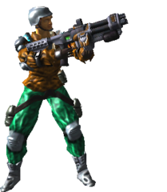 | The Shotgun is very similar to that of other games. It shoots several bullets with a high spread, so it does very high damage at close range, but becomes very inaccurate at distance. It is also very useful to knock opponents out after you already hit them hard with a rocket or another projectile, and subsequently closed to a distance because it's hard to miss with the Shotgun at close range. The primary fire mode fires once with a short reload, while the secondary fire mode shoots three very quick shots, but with a long reload afterwards. The secondary firemode also has a higher spread so the primary is useful for a longer distance than the secondary firemode. The Shotgun uses shell ammo which is not shared with any other weapons. | 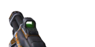 |
| 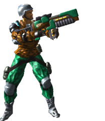 | The Machine Gun is also quite self-explanatory. It shoots bullets at a high rate of fire, and can do significant damage. The primary fire mode has a high spread and is thus quite inaccurate - but it fires very fast and deals more damage per second than most other weapons. It is therefore devastating when used at close quarters. One of the Machine Gun's unique features is that the first bullet after pressing fire has less spread and does more damage than the rest - keep this in mind when using it. The secondary fire mode is much slower, but its the same as the primary modes first bullets. This firemode is therefore very useful as an improvised sniper weapon for mid range kills. Like the Shotgun, it is an excellent finishing weapon, but its effective use relies heavily on a good, steady aim. The Machine Gun uses bullet ammo just as the camping rifle. | 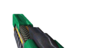 |
| 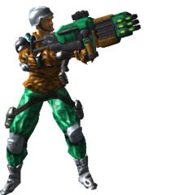 | The Heavy Laser Assault Cannon (HLAC) is a similar gun but fires highly accelerated Laser bolts at an insane refire rate. The bolts explode on impact and for some extra damage the secondary mode fires several of them at once. This is only gun that has reduced spread when crouching! Beware of your cell ammo (shared with the Electro, Crylink and (Minsta)Nex), this baby eats it like crazy. | 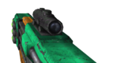 |
 | The Mortar is a grenade-launcher on steroids. Both firing modes shoot a fast-moving projectile grenade which is influenced by gravity, and thus moves in a parabolic trajectory. The primary fire mode shoots grenades that explode on impact while the secondary fire mode shoots grenades which will bounce off objects, and either explode on contact with an other player, or after a few seconds if they are not triggered. The grenades' arc makes them harder to aim, but also hard to dodge. Since they deal quite high damage, with an excellent rate of fire, the Mortar is a solid all-round weapon once you've got the hang of aiming it. The Mortar uses rocket ammo which is shared with the Rocket Launcher, T.A.G. and the Hagar. | 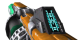 |
| 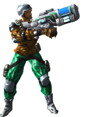 | The Electro is a rather underestimated gun. Contrary to its name, it does not deal electricity damage, but rather fires plasma - understanding this will help you to use it well. The primary fire mode shoots a plasma projectile which does quite high damage on impact. It also explodes rather like a rocket or grenade, and is quite comparable in use to the Quake 2 rocket launcher. The secondary fire mode spits out balls of contained plasma that will bounce like grenades, and deal similarly high damage. Those blobs have a short trajectory and so do not get very far - but they're useful for blocking a way, or for spamming around your opponent so that he is hedged in by them. If you use the primary fire mode to hit these contained plasma blobs, they will explode more violently than without, causing a lot of extra damage. This combo is very effective in corridors and small rooms. The Electro uses cell ammo which is shared with the Crylink, HLAC and the (Minsta)Nex. | 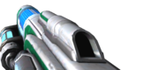 |
 | The Crylink is comparable to the Shotgun but shoots slow plasma projectiles; so it's harder to aim but they also do more damage. The primary fire mode shoots several bouncing projectiles at a high rate of fire and narrow spread. Each bounce causes splash damage so try to hit the floor near someone for damage from both the splash and the bullets themselves. The secondary fire mode has a wider, horizontal spread and lower rate of fire. This mode does not bounce but does more damage and is sometimes easier to aim. The Crylink uses cell ammo which is shared with the Electro, HLAC and the (Minsta)Nex. | 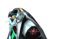 |
| 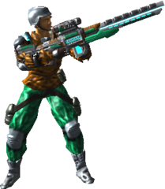 | The Nex is a powerful sniper weapon. Its primary fire mode fires a hitscan antimatter lance for significant damage, but requires a very precise aim, and has a relatively long reload time. The secondary fire mode activates zoom. The Nex uses cell ammo which is shared with the HLAC, Crylink, MinstaNex and the Electro. | 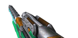 |
 | The MinstaNex is a sniper's wet dream. Similar to the nex but MUCH more powerful. One hit, one kill, no kidding! The secondary firemode is identical to the Laser's primary shot. Back in the glory days this gun was used solely in Minstagib to train steady aim and fast movement, now this gun can spread fear in every gamemode. Cell ammo is also used by Nex, Crylink, HLAC and Electro. | 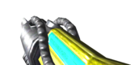 |
| 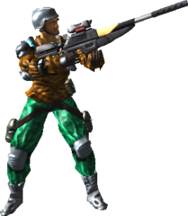 | The Rifle is a kind of mixture of a sniper rifle and an assault gun. The primary mode is quite similar to the nex but fires a bullet. The rate of fire is quite moderate. The secondary mode can be used to empty the whole magazine of bullets in an quick burst. This firemode is less wall piercing and has some spread to it but is deadly at mid-to-close range. The magazine is reloaded automatically if you equip the Rifle. It is also the only gun that can do headshots which cause extra damage, so aim with care, as this gun can out-perform the nex. The Rifle uses the same bullet ammo as the Machine Gun. | 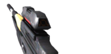 |
 | The Hagar can be compared to the plasma gun from Quake3. It has a very high rate of fire, with moderate damage, and some splash damage. The primary fire mode shoots small missiles at high speed and an extraordinary rate of fire. The secondary fire mode shoots the same missiles, but at a slower speed and rate of fire, and without the instant trigger. This means that they will bounce once when hitting a floor or a wall, giving you the opportunity to fire around corners, or double your chances to hit someone by spamming an area. The Hagar uses rocket ammo which is shared with the Mortar, T.A.G. and the Rocket Launcher. | 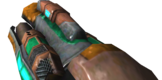 |
 | The Rocket Launcher is a little different from that of other games, in that the rockets move relatively slowly. The primary fire mode shoots a slow-moving, high-damage rocket projectile at a medium rate of fire. The secondary fire mode will explode all your flying rockets at once. This means that you don't need to hit your opponent directly - just get the rocket near him, and use the secondary fire to cause splash damage which will badly hurt him. The Rocket Launcher uses rocket ammo which is shared with the Mortar, T.A.G. and the Hagar. | 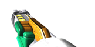 |
Now that you know all the guns you also have to understand that in Nexuiz each projectile can be set off by explosions. So its possible to blow up the rocket an opponent is shooting at you. A good strategy against someone with a rocketlauncher is to spam him with the hagar. Chances are high you make his own rocket explode shortly after he launched it and hurt him which his own weapon! Also note that some objects are affected / pushed by explosion like the keys in Keyhunt or the flags in Capture the Flag.
A special feature in Nexuiz is that walls do not block explosions, so you can't hide behind them. Similarly, if you know that someone is on the floor above you, shoot at the ceiling, and with a little luck the explosion might hurt him. This can be changed by a server admin, but the default allows for more fun; and it's also nice to see how good people are at guessing where their opponents are. Furthermore bullets are ballistic, which means they are affected by gravity much like real bullets and can also pierce walls and enemies like real bullets. That enables you to hit several enemies or enemies behind walls/floors up to a certain thickness.
Using Jumping Effectively
You will need to be able to get around the map quickly and efficiently if you are to hunt down your opponents, and collect items well. As already mentioned, the Laser is useful for jumping and gaining speed - but you can use all explosive weapons for a similar effect. Other weapons, however, will cause (much) more damage to your health, and not all offer the same strong push as the Laser. The rocket launcher will push you twice as far, but you will also take lots more damage. The mortar has the same push as the Laser, but its explosion is bigger so the timing and the right angle are less of an issue. For this reason, the mortar is better for a beginner to learn these sorts of jumps.
You should also know that you gain a bit extra speed moving forward simply by jumping. When you walk, there is friction from the floor which keeps you at a constant speed. If you jump as you walk, the amount of time you touch the floor is considerably less, and so the friction does not slow you down as much. The longer or rather more often you jump, the faster you go. The most simple way to do this is to run forward, jump, and then while you are in the air release and repress/hold the jump button. Your character will jump again the moment he lands, without you having to worry about timing hitting the jump key. Just repeat it a few times and you will notice you get faster and faster. Unlike other games, Nexuiz does not need you to do this with strange key combinations or even with circular movements of the mouse - trying to do these will generally make you slower. The only time that strafe-jumping (holding one of the strafe-keys while jumping) is useful is for the very first jump you make. This can increase your jump speed a little - although not by much and its complicated to learn.
Another useful thing to know about movement is that if you are flying/jumping, you can release the forward key and instead press the left or right key, and turn your mouse in the same direction. Doing so will turn or 'bend' your jump in this direction. This is a useful trick to get around corners, to become less predictable, and also to avoid having to stop jumping to change direction. After getting used to this you can get around maps very fast and maintain a high speed.
Both the speed jumping and the turning require a certain amount of practice, but they are easy to learn - especially compared to the trick jumping found in games like Quake 3 CPMA or Enemy Territory. However, there is another trick in Nexuiz that does not need any practice at all: the ramp jump. Just walk up a ramp or slope, and jump. That jump will get you higher and further than if you had jumped on flat ground. You can reach some interesting spots by doing this, and ramp jumps can be effectively combined with speed jumping to achieve some remarkable acrobatics which can be very useful for taking shortcuts and thus dominating a map effectively. It takes some time to learn the good spots were these four tricks can be used to the maximum effectiveness - again, experiment yourself, watch others, and ask around in-game or on the Nexuiz forums (http://www.alientrap.org/forum).
The Console
Games generally have a great many settings which can be changed or tweaked to give you the best advantage. A lot of these aren't included in the game menus, which are limited by space and intended to give only a quick and compact view of the most important options. For all the other variables, you have the in-game console. This is like a command line inside the game. You can enter commands to connect to a server, vote for options on the server, or to change variables like your name or various graphic effects. You can access the console by pressing shift-escape, and you can close it again by pressing escape. Lots of info is available on the official Nexuiz forum regarding the effective use of the console, but probably the most important in multiplayer is using it for voting, which will be briefly covered here:
When you are on a server, open the console and type vhelp. This will display a short help regarding voting, and also tell you what can be voted on the server. By default, things you can vote for include the timelimit and the map played. By entering vcall timelimit -1 you call a vote to set the timelimit to -1, which means to end the current map and play the next one. Or, as another example, vcall chmap aggressor will start a vote to switch to the map 'Aggressor'. This vote is printed to every player on the server, who can then accept or reject it. To accept a vote, press F1 (or type in vyes at the console); to reject it, press F2 (or enter vno at the console). If more then 50% of the players currently on the server accept a vote, the vote is passed and whichever setting has been polled will change. And in this example the current map will end and the next map will begin. It does not hurt to tell people to press F1/F2, as some still do not know about it.
Game Types
Nexuiz supports several different game modes and some smaller changes called mutators. Both are displayed when you connect to a server.
Modes
- Deathmatch (DM) is the most simple game mode. It is a free-for-all fragfest with every man for himself. All items are free to grab, and the player with the most frags will win (either by hitting the frag limit, or when the time limit expires).
- Team Deathmatch (TDM) is similar, but pits teams of players against each other. Only shoot players with a different color than yourself. Look at your gun to see your color. The team with the most frags wins.
- Capture The Flag (CTF) is a team match in which you have two teams, two bases, and two flags. You have to get into the enemy base, grab their flag, and bring it back to your own flag to score. Scoring gives the most points, normal fragging and returning the flag gives some points. The team with the most points wins. CTF is a surprisingly complicated game mode, so see the comprehensive CTF guide in the Nexuiz forum for more information (http://alientrap.org/forum/viewtopic.php?t=849).
- Minstagib is an improved instagib. You can pick up lives, so you can survive two shots, and you can pick up an item to become almost invisible. This is were the minstanex got its name from.
- Runematch places five runes into the map in addition to the normal items. A rune gives you a bonus but also a curse - but you only get points for fragging if you carry a rune, so make sure you have one. You also get points for fragging a rune carrier, and for just holding a rune (but fragging is the quicker way to gain points). The player with the most points wins.
- Domination (DOM) is also a team mode. Throughout the map are domination points. Touch them and your team will own that point. You get points for each second you own such a domination point. Touch points the other team holds to turn it into your own. The team with the most points wins.
- Last Man Standing (LMS) puts all players into a map without any items. Each player has several lives, and starts with all weapons when he spawns. Each time you are fragged you lose a life. The winner is the last surviving player.
- Arena mode is similar to deathmatch, but it only puts two players into a map, with the others waiting in a queue. When one of both is fragged the next one in the queue will play against the winner.
- Keyhunt (KH) is a new team mode in Nexuiz 2.3. Each team has one key and the goal is the collect all keys. The team with the most points wins. You get small points for fragging, fragging a keycarrier and picking up a key but you should go for the BIG points you get when one team has all the keys and all the keycarriers meet. Of course it also works when ONE player gets all the keys for his team but this is much harder.
- Onslaught (ONS) is a new team mode in Nexuiz 2.4. Each team has a powergenerator and the goal is to destroy the enemies generator. Each generator and all except one checkpoint in the map are protected by an forcefield which is powered by nearby checkpoint. Your team has to start at the one unprotected checkpoint and work your way up to the enemies generator. Find the perfect balance between attacking the enemies checkpoints/generator and protecting your own.
- Assault (AS) is a similar team mode and also new in Nexuiz 2.4. There are objects in the map, only one is active at a time and you have to complete that one to unlock the next objective. One round ends if the last objective is completed or timelimit is hit. After the round the teams swap the attackers/defender roles.
- Race is a new mode for all the quick people in Nexuiz 2.5. The goal is to race through the level as fast as possible. A timer is set off at the startline and stopped at the endline. Checkpoints in between give you an update on your time and compared to the top player. There are three different race modes:
- Qualifying mode saves each player's fastest lap time and the player with the fastest time wins. When you die, you respawn in front of the startline. Players can't interact in this mode. They walk through each other and can't shoot at the others.
- Race mode is won by the player who makes a certain count of laps first. Players can interact and kill each other. When killed, you respawn in front of the last checkpoint you went through.
- Mixed mode has the players first compete in qualifying mode for a certain time, or until they are all ready, then the game switches to race mode. The fastest player in qualifying mode is the first to spawn in race mode and so on.
Mutators
- The hook mutator will add an off-hand hook which can be used like the grappling hook but can be used while you carry other guns. Fire the hook at a ceiling or wall using the key configured through the menu or bound using bind "key" "+hook". Hold down this key while the hook is attached to be pulled toward it.
- Laser-guided rockets will give you a Laser dot on the rocket launcher which you can use to guide the most recently fired rocket.
- Vampire will add whatever damage you do to your opponent to your own health.
- Nixnex will remove normal guns from the map and give all players the same gun. That gun is changed after a while.
- Footsteps will add footstep sounds to your movements.
- Weapon Arena equips everyone with the arena gun chosen by the server admin.
There are some more of these mutators, but those are the most important ones.
A list of useful links:
- The official Nexuiz forum: http://alientrap.org/forum
- The semiofficial Nexuiz wiki: http://alientrap.org/wiki
- The official Nexuiz ladder: http://planetnexuiz.com/ladder
- The Official Nexuiz tournaments: http://planetnexuiz.com/tourney
- General Nexuiz Tips and Tricks: http://alientrap.org/forum/viewtopic.php?t=90
- How to get more help via IRC: http://alientrap.org/forum/viewtopic.php?t=497
- CTF guide and ctf MAPS guide: http://alientrap.org/forum/viewtopic.php?t=849
- Team communication explained: http://alientrap.org/forum/viewtopic.php?t=555
- A few useful jumps: http://esteel.planetnexuiz.de/nexuiz/demos/jumps.pk3 (copy the file into Nexuiz/data and you should find the demos in the demos menu)
- FPS settings: http://alientrap.org/forum/viewtopic.php?t=1628
- A list of all available variables in Nexuiz: http://alientrap.org/wiki/pmwiki.php?n=Main.GameTweaks
- A list of all available commands in Nexuiz: http://alientrap.org/wiki/pmwiki.php?n=Main.ConsoleCommands
- Some info about generic strategy in games: http://alientrap.org/forum/viewtopic.php?t=3496
This document was generated using AFT v5.096